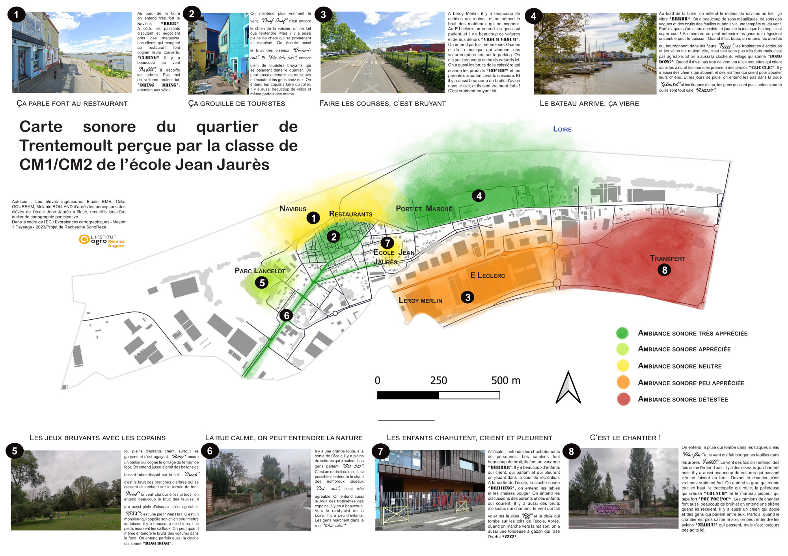
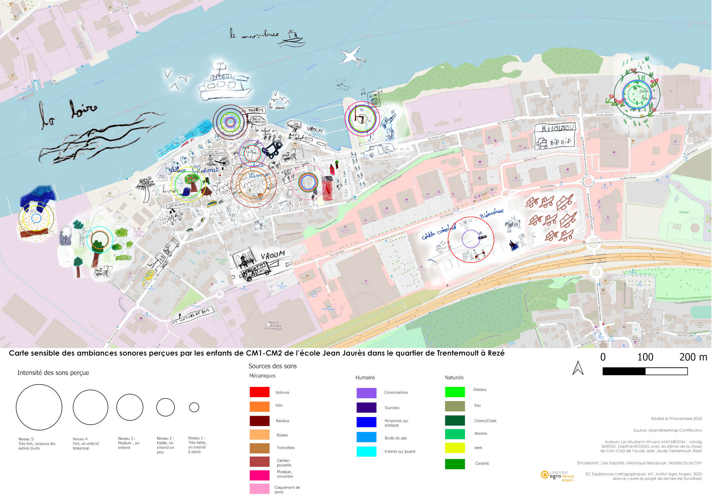
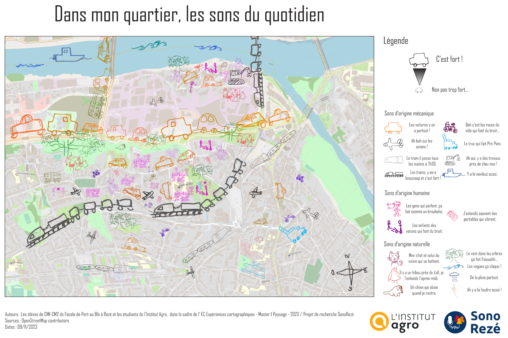
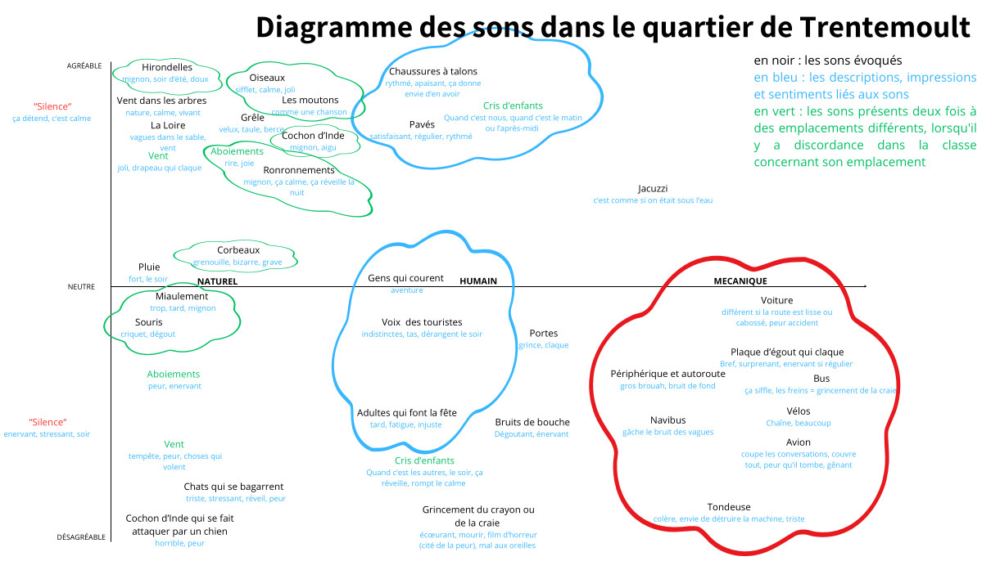

Cadre de l'intervention
Dans le cadre de leur cursus en 1ère année de Master spécialité "paysage" à l'Institut Agro d'Angers, douze étudiants ont été amenés à développer une analyse du paysage sonore de la ville de Rezé. Ce travail a donné lieu à la production de cartes sensibles, qui permettent de représenter de manière graphique le ressenti et la perception de son environnement à travers un prisme donné, ici le son.
Ce travail a été mené en collaboration avec les deux écoles élémentaires Jean Jaurès et Port-au-Blé de Rezé, avec des classes de CM1 et CM2.
Les étudiants ont réalisé ce travail dans le cadre de l'unité d'enseignement "Expériences cartographiques" et étaient encadrés par les enseignantes responsables : Véronique Beaujouan et Lise Saporita.
Cette intervention a donné lieu à deux types de restitutions :
1- cartes sensibles individuelles. Chaque étudiant disposait d'une journée pour arpenter les alentours des écoles Jean Jaurès et Port-au-Blé, dans l'objectif de s'imprégner du paysage sonore et de pouvoir en faire une restitution (carto)graphique.
2- cartes sensibles collectives montrant les perceptions des paysages sonores par les enfants, répartis en 4 groupes de travail. À l’issue d’une journée d’atelier avec les enfants, les étudiants ont réalisé un travail de synthèse et de mise en carte des informations ainsi collectées. Les cartes présentées ci-dessous sont le fruit de ce travail.
Sur cette page nous présentons les cartes sensibles réalisées avec les écoliers.
La partie du travail concernant la réalisation de cartes sensibles de manière individuelle par les étudiants est visible sur la page "Cartes sensibles - Étudiants".
École Jean Jaurès
Élodie Eme, Célia Gourram, Mélanie Rolland

Titre : Carte sonore du quartier de Trentemoult perçue par la classe de CM1-CM2 de l'école Jean Jaurès
École Jean Jaurès
Vincent Amourdom, Lenaig Bariou et Daphné Roussel

Titre : Carte sensible des ambiances sonores perçues par les enfants de CM1-CM2 de l'école Jean Jaurès, dans le quartier de Trentemoult à Rezé
École Port-au-Blé
Léa Stéfanut, Pauline Mennessier, Laurine Nogue

Titre : Dans mon quartier, les sons du quotidien
École Jean Jaurès
Carmen Delavaud, Chloé Huort, Léa Peluzzi

Titre : Diagramme des sons dans le quartier de Trentemoult
École Port-au-Blé
Carmen Delavaud, Chloé Huort, Léa Peluzzi

Titre : Diagramme des sons dans le quartier de Port-au-Blé
Restitution
À l'issue de ce travail avec les écoliers, puis après une phase de mise en carte des données collectées, les étudiants ont eu l'occasion de faire une restitution de leurs productions. Cette présentation s'est déroulé en deux temps (un dans chaque école) le 10 novembre 2023.
Ce moment à permis d'échanger sur la vision personnelle des étudiants (voir la page "Cartes Etudiants") et aussi de montrer les cartes issues du travail de groupe avec les écoliers.